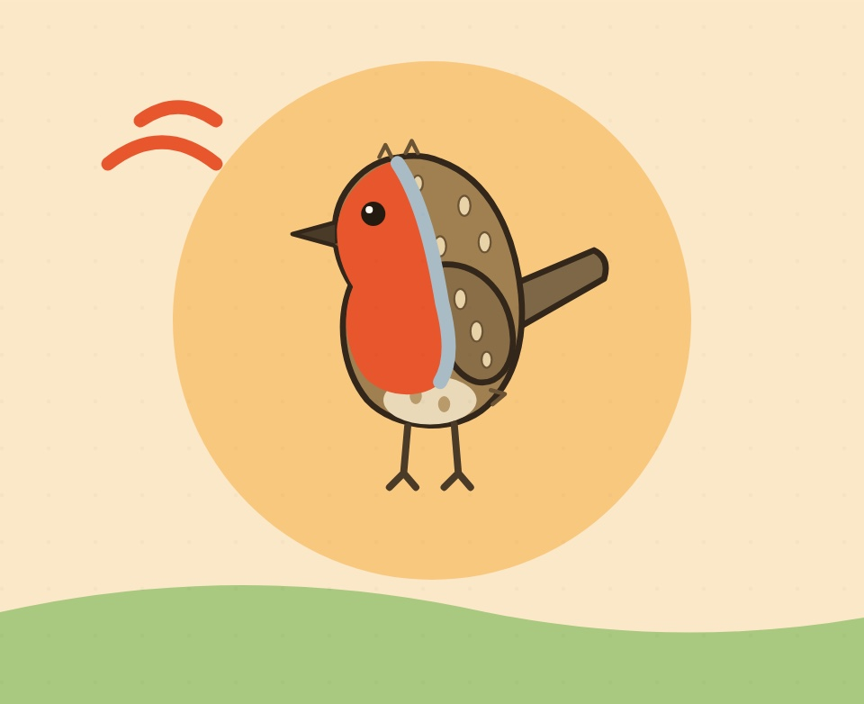
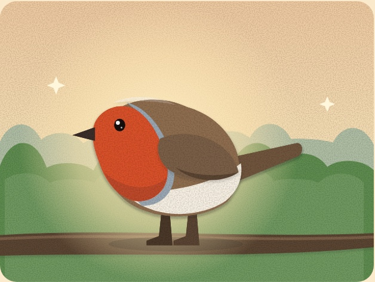
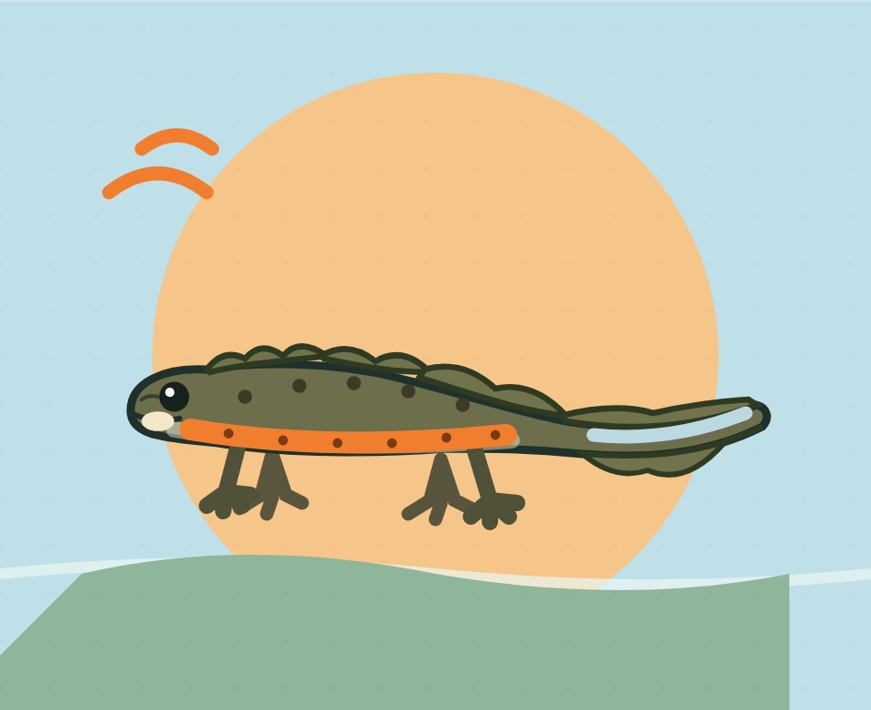
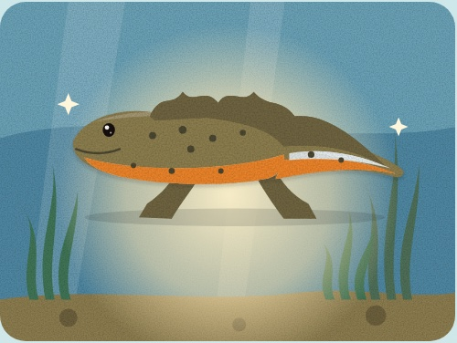
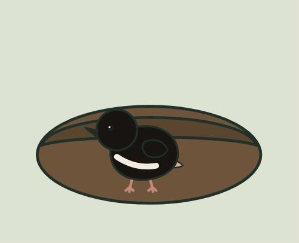
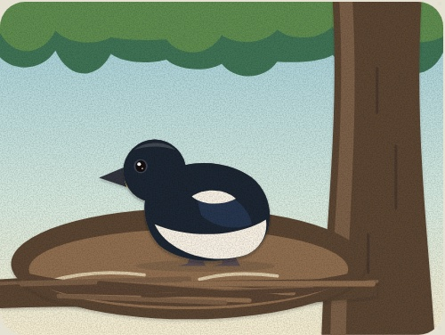

Twelve interactive stories about UK garden wildlife for primary school children. Each one follows a creature through its real life story and ends with a quiz and a badge to collect.
My role
I came up with it, set the structure and led the design direction. I directed the build with Claude.
What I did myself
I decided the goal and the structure of each story. The quiz, the badges, the animations, the illustration style and the use of sound were my calls too.
What others owned
Claude advised on the facts and the safety wording and I followed its recommendations. A handful of children and one parent have tried it. A local primary school is in early talks.
Dates
The idea began in spring 2026. I made the first two stories and the template in July 2026 and the rest between July and November. I redrew the illustrations in November 2026.
Built with
Claude Code and Cowork, starting in a Claude chat project. The illustrations are drawn in code with Python scripts. Hosted on my own Cloudflare account.
See it
Not public yet.
The problem
In spring 2026 a young robin started coming to our window every day to look at us. I looked up how robins grow up so I could explain it to my children.
That became a story called Rusty the Robin. I named him Rusty because we were curious about how young robins get their red breast. I kept the names simple for my 5 year old son, who likes characters whose names rhyme and start with the same letter. Every creature since has followed that rule.
The stories are for primary school children, from around 3 or 4 up to 11. I first wrote them for ages 7 to 10 and widened the range later. Each story follows one creature through its real life cycle and has a reveal in the middle. It has three activities, and a badge at the end.
The landing page, November 2026. Screenshot of the current version, taken from the saved file
What made it hard
Children from 3 to 11 read very differently, so the text has to be simple and short and the pages have to work for someone still learning to read.
Every fact has to be right and nothing can frighten a child. The brief for the newt asks me to avoid implying a Great Crested Newt, which is legally protected in the UK. Patch is a woodpigeon, and his story steers clear of the city pigeons people picture being fed bread.
The illustrations are the hardest part. They are drawn as vectors in code, and some young birds are meant to look fluffy. The robin, the pigeon and the magpie were the hardest, because a flat shape does not look soft.
Each story also has to work on its own in a browser with no login. It has sound and animation and a scroll-driven reveal, and it has to stay accessible.
Decisions
A template after two stories
Considered
Making each creature its own bespoke story. I hadn't expected to make more than one.
Chose
A template that every new creature is copied from, with a brief and a written narrative signed off before any code. It allowed small changes, such as creatures whose life cycle is slightly different.
Why
As we saw more wildlife in our garden, conversations with my children inspired more stories. I tried out a few ideas with Claude and found the stories had more in common than they had differences. Keeping the format consistent also helps children get used to it and understand it.
12 stories now use the same ten-chapter format, three activities and badge, as listed in the project's handoff notes.
Redraw it in a cut-paper style
Considered
The first style, with bold ink outlines around every shape.
Chose
Layered shapes of cut paper with no outlines, and a shared palette. I redrew all twelve stories and the landing page.
Why
I wasn't happy with the original outputs. I wanted to see if I could replicate the style of popular cartoons such as Sarah and Duck and Charlie and Lola.
One colour held back for the reveal
Considered
Keeping the reveal as a one-off in Rusty's story, where it began.
Chose
Each creature has one colour that does not appear anywhere before the reveal in chapter 5. For Rusty it is the red breast and for Newton the orange belly.
Why
The reveal was the magical hook from the very start with Rusty the Robin. Working on the other stories I realised that each creature had a moment like it. It reminded me of the ending of The Very Hungry Caterpillar. It adds delight, which children love.
A quiz and a badge in every story
Considered
Marking the quiz. An earlier version came across as too strict for this age group.
Chose
A simple multiple choice quiz that can be retried, two games, and a badge to collect at the end. The badge came later. A landing page shows each story as in progress, finished or 100% on the quiz.
Why
I didn't want to put children off, so the quiz stayed simple. The badge helps them feel they can come back to a story to learn more and get top marks. I built e-learning for police forces earlier in my career, where the most competitive users came back to get 100% even when 80% was enough to pass.
I followed Claude's recommendations on the facts and the safety wording in each story, and I led on the design direction. I decided what to ask for and how it should look and feel. Claude helped me check that each approach would work.
How it changed
The biggest change was in November 2026, when I redrew every story. The pairs below show the same moment in the old and the new style. I could not recover screenshots taken at the time, so each image was captured again from the saved files in November 2026.
Rusty, July 2026. Ink outlines. Screenshot of the saved file dated 18 July 2026, taken in November 2026

Rusty, November 2026. Cut-paper style. Screenshot of the current file

Newton, July 2026. Ink outlines. Screenshot of the saved file dated 19 July 2026, taken in November 2026

Newton, November 2026. Cut-paper style. Screenshot of the current file

Mabel the magpie as a fledgling, before November 2026. Ink outlines. Screenshot of the retired version, which I kept as a backup. The date of its original build is not recorded

Mabel, November 2026. Cut-paper style. Screenshot of the current file

I could not show the first version of Rusty from the July Claude chats or the steps between the two styles, and I did not recreate them.
Results
12stories built: ten new creatures and the original robin and newt, counted from the project files
10chapters in each story, with three activities and a badge
I have no measured results. A handful of children have tried it, and I have not recorded anything from those sessions beyond what they said.
They enjoyed the quiz. The story worked well as a bedtime story. My son said he wanted to replace his bedtime stories with one of these every night, and the badges made children want to carry on. Another child's parent told me it inspired them to spend more time in their garden. That is informal feedback from a few people.
Talks with a local primary school are starting to take shape.
What went wrong
The first illustrations weren't good enough
I wasn't happy with the original outputs, and there were many rounds of illustration. The young robin, pigeon and magpie were the hardest, because they are meant to look fluffy and a vector shape looks flat. Each round took time to try and to check.
Bugs that every story shared
Because the stories came from one template, a mistake spread to all ten. The scroll-linked reveal measured progress against the whole chapter and ignored the picture, and the tap targets in the first activity were invisible by default. Both were fixed across all ten files, as the project's handoff notes record. I tested each build myself on my laptop and phone and raised the bugs myself. I oversaw many product launches in my career and was often asked to test other teams' work as well.
What I would do differently
I would start from the foundations on the illustrations. Trying many different versions and checking each one cost me more time than anything else.
Next I want to pitch it to the local school and collect more feedback. Then I will take that research, with an updated project, to UK wildlife charities.